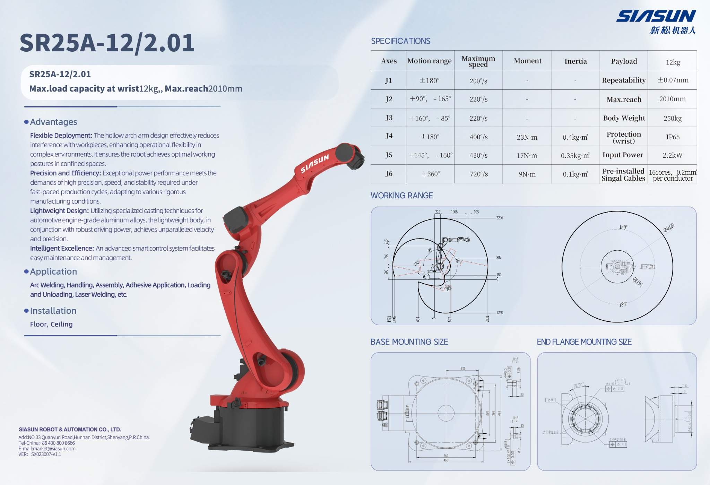

Desktop Type
Kompaktowe roboty do małych stanowisk, montażu, testów, lekkiej manipulacji i integracji z kamerą.
Najlepsze do: montażu, laboratoriów, małych detali i stanowisk vision. Przykłady: SN4A-4/0.58, SN7B-7/0.90, SN10A-10/1.15SIASUN Robotics
Dobieramy i integrujemy roboty SIASUN pod konkretny proces: paletyzację, pick&place, obsługę maszyn, spawanie, manipulację elementami oraz stanowiska z systemem wizyjnym.
Interaktywny model 3D
Model można obracać, przybliżać i prezentować bezpośrednio w przeglądarce. Po przygotowaniu animacji osi sekcja może również pokazywać ruch robota.
Oferowane serie
Poniżej znajduje się oferta podzielona na typowe grupy robotów. Modele dobieramy na podstawie masy detalu, zasięgu, chwytaka, czasu cyklu i środowiska pracy.
Kompaktowe roboty do małych stanowisk, montażu, testów, lekkiej manipulacji i integracji z kamerą.
Najlepsze do: montażu, laboratoriów, małych detali i stanowisk vision. Przykłady: SN4A-4/0.58, SN7B-7/0.90, SN10A-10/1.15Najbardziej uniwersalna grupa do pick&place, spawania, obsługi maszyn, montażu i manipulacji.
Najlepsze do: spawania, machine tending, pick&place i robot + vision. Przykłady: SR12A-12/1.46, SR25A-12/2.01, SR25A-25/1.80, SR50A-50/2.15Roboty do cięższych detali, paletyzacji, obsługi dużych elementów i aplikacji z dużym zasięgiem.
Najlepsze do: paletyzacji, ciężkiej manipulacji i dużych chwytaków. Przykłady: SR210A-210/2.65, SR220A-125/3.10, SR270A-270/2.70, SR360A-360/2.83Roboty do bardzo ciężkich detali, większych chwytaków i wymagających stanowisk przemysłowych.
Najlepsze do: ciężkich elementów, dużych chwytaków i wymagających aplikacji transportowych. Przykłady: SR500A-360/2.83, SR500A-500/2.52
Wyróżniony model
Uniwersalny robot 6-osiowy do spawania, obsługi maszyn, manipulacji, montażu, załadunku i rozładunku oraz aplikacji z systemem wizyjnym.
Roboty do spawania
System spawalniczy może obejmować robota, kontroler, źródło spawalnicze, podajnik drutu, palnik, chłodzenie, czujniki, układ śledzenia spoiny i konfigurację stanowiska.

Możliwość wykorzystania funkcji dotykowych lub bezkontaktowych do wykrywania położenia elementu i startu spoiny.
Rozwiązania do korekcji trajektorii podczas spawania, gdy detal lub spoina nie są idealnie powtarzalne.
Konfiguracje dla elementów wymagających kilku przejść lub spawania grubszych blach.
Możemy połączyć robota z pozycjonerem, PLC, HMI, sygnałami bezpieczeństwa i diagnostyką.
Integracja
Robot musi być częścią całości: chwytak, mechanika, czujniki, bezpieczeństwo, PLC, HMI, system wizyjny, dokumentacja i uruchomienie na produkcji.